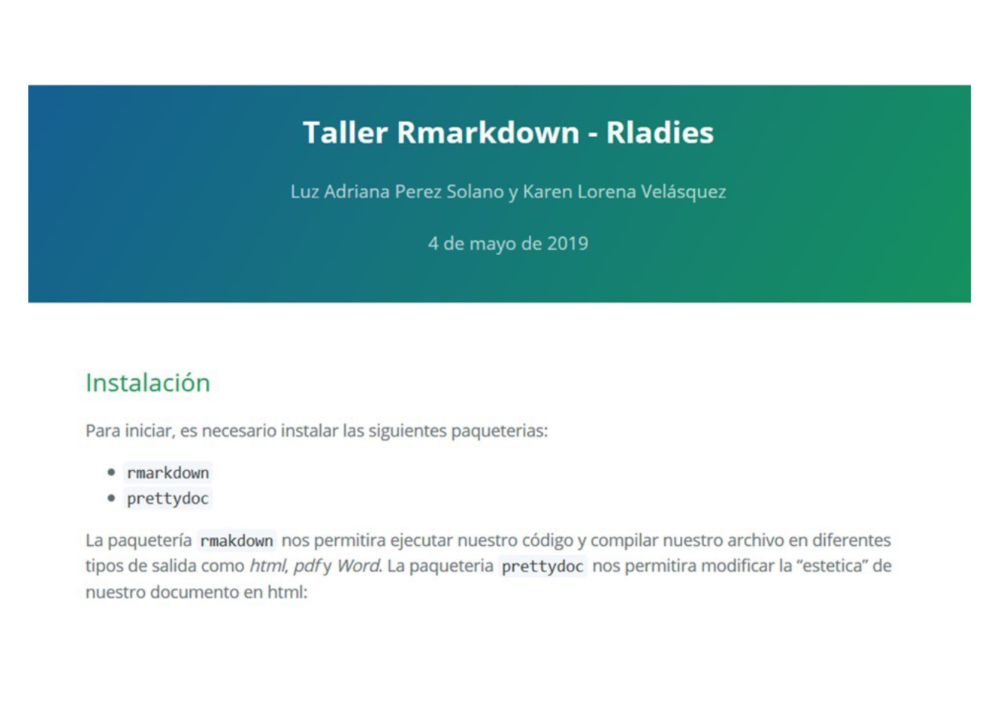
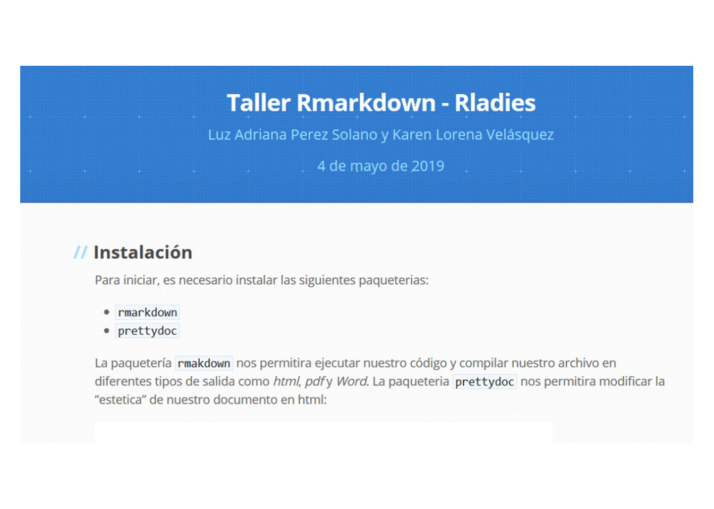
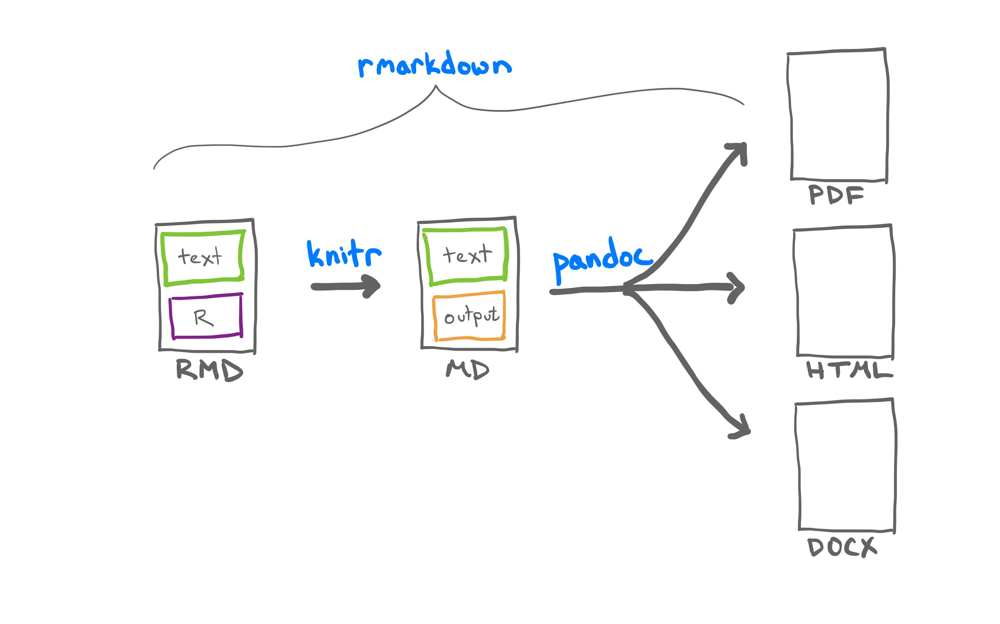
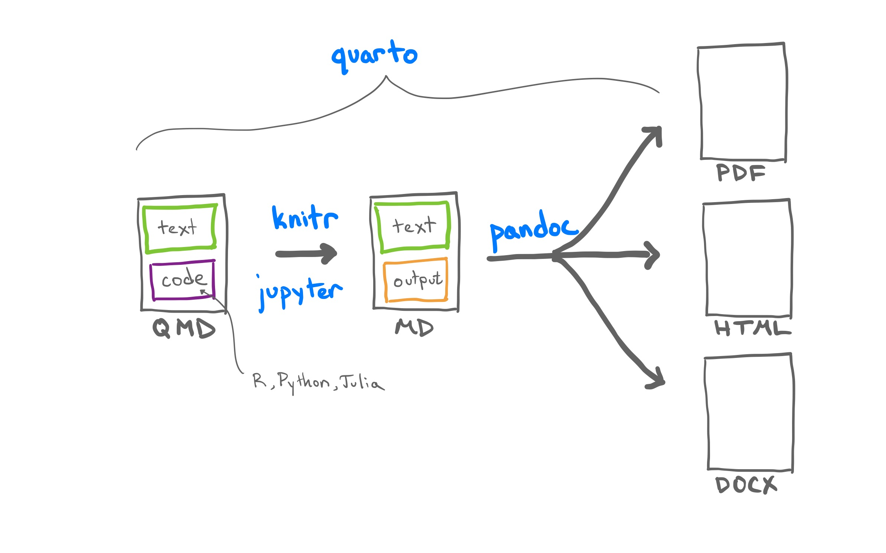
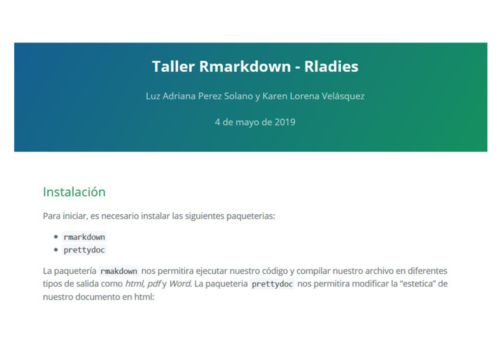
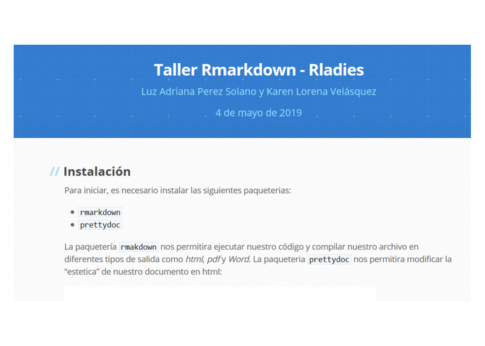

Karen Lorena Velásquez-C
May 10, 2024
Para iniciar, es necesario instalar las siguientes paqueterías:
quartormarkdownprettydocimagerknitrrmarkdown es una paqueteria que se basa en la sintaxis de marcas markdown, generada con el fin de facilitar el desarrollo de paginas web, dicha sintaxis fue integrada por Rstudio (Posit) con el fin de conjugar el lenguaje R con la generación de textos científicos.
Rstudio emplea pandoc como conversor universal de documentos, permitiendo así los diferentes tipos de salida de rmarkdown.
La paqueteria knitr es la encargada de generar la interacción entre R y pandoc y de tal forma la obtención del documento en el formato deseado.

Quarto es una versión multi-lenguaje y de nueva generación de R Markdown de Posit e incluye docenas de nuevas características y capacidades, al tiempo que es capaz de renderizar la mayoría de los archivos Rmd existentes sin modificaciones. Quarto es una herramienta de interfaz de línea de comandos, no un paquete R.



Rladies :“código”Rladies (Normal)
Markdown permite cargar imágenes en formatos .jpg, .png, y .jpeg.
Primera forma:

Ejemplo:
Segunda forma:
Mediante el uso de la librería imager podemos cargar diversos tipos de imágenes y modificar su aspecto.